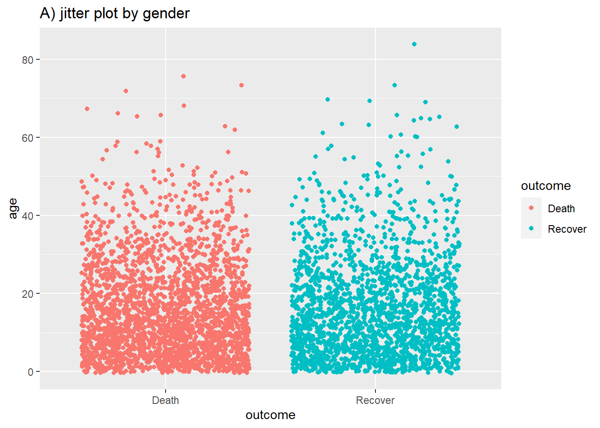
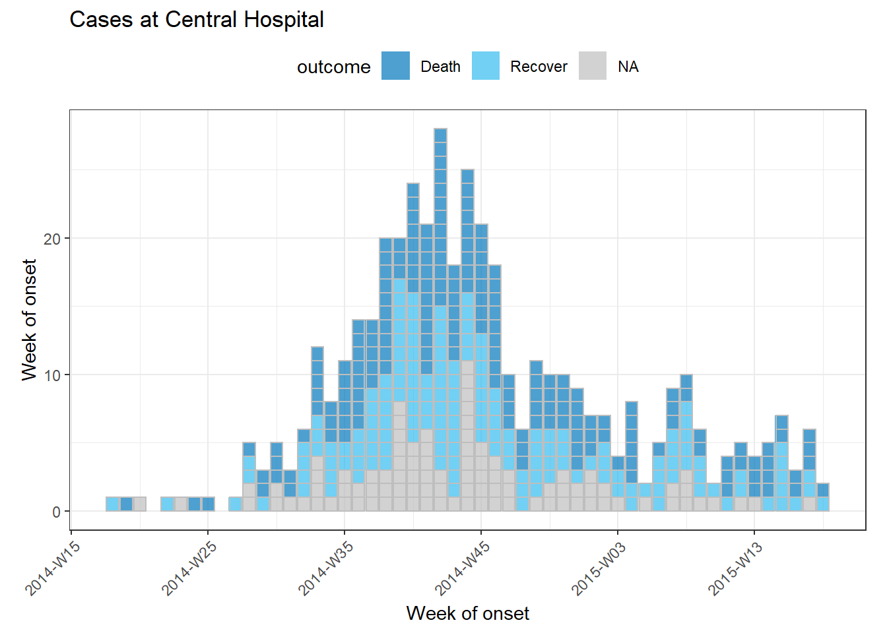

29 ggplot basics
ggplot2 is the most popular data visualisation package in R and is generally used instead of base R for creating figures. The “gg” in the name represents a “grammar of graphics”. ggplot2 benefits from a wide variety of supplementary R packages that further enhance its functionality.
The syntax is significantly different from base R plotting, and has a learning curve associated with it. Using ggplot2 generally requires the user to format their data in a way that is highly tidyverse compatible, which ultimately makes using these packages together very effective.
In this page we will cover:
- The fundamentals of plotting with ggplot2
- Tips and tricks to make your plots sharp
There a several extensive ggplot2 tutorials linked in the resources section. You can also download this data visualization with ggplot cheatsheet from the RStudio website. If you want inspiration for ways to creatively visualise your data, we suggest reviewing websites like the R graph gallery and Data-to-viz.
29.1 Preparation
Load packages
This code chunk shows the loading of packages required for the analyses. In this handbook we emphasize p_load() from pacman, which installs the package if necessary and loads it for use. You can also load installed packages with library() from base R. See the page on R basics for more information on R packages.
pacman::p_load(
tidyverse, # includes ggplot2 and other
rio, # import/export
here, # file locator
stringr, # working with characters
scales, # transform numbers
ggrepel, # smartly-placed labels
gghighlight, # highlight one part of plot
RColorBrewer # color scales
)Import data
We import the dataset of cases from a simulated Ebola epidemic. If you want to follow along, click to download the “clean” linelist (as .rds file). The dataset is imported using the import() function from the rio package. See the page on Import and export for various ways to import data.
linelist <- rio::import("linelist_cleaned.xlsx")The first 50 rows of the linelist are displayed below. We will focus on the continuous variables age, wt_kg (weight in kilos), ct_blood (CT values), and days_onset_hosp (difference between onset date and hospitalisation).
General cleaning
When preparing data to plot, it is best to make the data adhere to “tidy” data standards as much as possible. How to achieve this is expanded on in the data management pages of this handbook, such as Cleaning data and core functions.
Some simple ways we can prepare our data to make it better for plotting can include making the contents of the data better for display - this does not necessarily mean its better for data manipulation! For example:
- Replace
NAvalues in a character column with the string “Unknown”
- Clean some columns so that their “data friendly” values with underscores etc are changed to normal text or title case (see Characters and strings)
Here are some examples of this in action:
linelist <- linelist %>%
# make display version of columns with more friendly names
mutate(
# f to Male, f to Female, NA to Unknown
gender_disp = case_when(gender == "m" ~ "Male",
gender == "f" ~ "Female",
is.na(gender) ~ "Unknown"),
# replace NA with unknown for outcome
outcome_disp = replace_na(outcome, "Unknown")
)Pivoting longer
As a matter of data structure, for ggplot2 we often also want to pivot our data into longer formats, which will allow us to use a set of variables as a single variable. Read more about this is the page on Pivoting data.
For example, say that we have “wide” data with each case and their symptoms (as shown shown below, in the style of the linelist).
symptoms_data <- linelist %>%
select(c(case_id, fever, chills, cough, aches, vomit))Here is how the first 50 rows look:
If we wanted to show the number of cases with specific symptoms, we are limited by the fact that each symptom is a specific column. However, we can pivot the symptoms columns to a longer format like this:
symptoms_data_long <- symptoms_data %>%
pivot_longer(cols = -case_id,
names_to = "symptom_name",
values_to = "symptom_is_present") %>%
mutate(symptom_is_present = replace_na(symptom_is_present, "unknown"))Here are the first 50 rows. Note that case has 5 rows - one for each possibly symptom. Scroll to the right to see the new columns symptom_name and symptom_is_present. Note that this format is not very useful for other operations, and should just be used for the plot it was made for.
29.2 Basics of ggplot
“Grammar of graphics” - ggplot2
Plotting with ggplot2 is based on “adding” plot layers and attribute specifications on top of one another, with each sub-command added with a plus symbol (+). The result is a multi-layer plot object that can be saved, modified, printed, exported, etc.
ggplot objects can be highly complex, but the basic order of layers will usually look like this:
- Begin with the baseline
ggplot()command - establish the coordinate base and specify the dataset
- Add “geom” layers - these geometric functions visualize the data as a bar graph, line plot, scatter plot, histogram, etc (or a combination!). These functions all start with
geom_as a prefix.
- Add adjustments to the plot such as to specify the axis labels, title, fonts, sizes, color schemes, legends, rotate the axes, etc.
A simple example of skeleton code is as follows. We will explain each component in the sections below.
ggplot(data = my_data)+
geom_XXXX(mapping = aes(x = col1, y = col2), fill = "color")+
labs()+
theme()
29.3 ggplot()
The opening command of any ggplot2 plot is ggplot(). This command simply creates a blank canvas upon which to add layers. It “opens” the way for further layers to be added with a + symbol.
Typically, the command ggplot() includes the data = argument for the plot. This sets the default dataset to be used for subsequent layers of the plot.
Finally, this command will end with a + after the closing parentheses. This leaves the command “open”. The plot will only execute/appear when the command includes a final layer without a + at the end.
# This will create plot that is a blank canvas
ggplot(data = linelist)29.4 Geoms
A blank canvas is not sufficient! We need to create geometries from our data! Bar plots, histograms, scatter plots, box plots!
This is done by adding layers of geometry to the initial ggplot() command. There are many ggplot2 functions that create “geoms”. Each of these functions begins with “geom_”, so we will refer to them generically as geom_XXXX(). There are over 40 geoms in ggplot2 and many others created by fans. View them at the ggplot2 gallery. Some common geoms are listed below:
- Histograms -
geom_histogram()
- Bar charts -
geom_bar()orgeom_col()
- Box plots -
geom_boxplot()
- Points (e.g. scatter plots) -
geom_point()
- Line graphs -
geom_line()orgeom_path()
- Trend lines -
geom_smooth()
In one plot you can display one or multiple geoms. Each is added with a +, and they are plotted sequentially such that later geoms are plotted on top of previous ones.
There are two bar plots functions - geom_bar() and geom_col() which are discussed in more depth in a later section.
But simply knowing these geom functions is not sufficient to produce a plot! We must also map the data to the plot…
29.5 Mapping plot aesthetics to data
The next core component of a ggplot() object is how plot “aesthetics” are mapped to columns in the data. By a plot “aesthetic”, we mean a visual property of an object in the plot.
For most geoms, the essential aesthetics that must be mapped to columns in the data are the x-axis, and (if necessary) the y-axis.
Aesthetics that are “mapped” to columns of the data are specified to the mapping = argument. The exact assignments are made within aes(), which is provided as mapping = aes(), as shown below.
Below, in the ggplot() command the data are set as the case linelist, and then within aes() the column age is mapped to the x-axis, and the column wt_kg is mapped to the y-axis. A + continues the plotting command and leads to geom_point(). This geom inherits the mapped aesthetics from the ggplot() command - it know the axis-column assignments and proceeds to visualize those relationships as points on the canvas.
ggplot(data = linelist, mapping = aes(x = age, y = wt_kg))+
geom_point()
The following command utilizes the same data, but slightly different aesthetic mapping and a different geom. It produces a histogram with geom_histogram(), which by its very nature only requires a column mapped to the x-axis. The count y-axis is generated automatically.
ggplot(data = linelist, mapping = aes(x = age))+
geom_histogram()
Aesthetic mapping can be defined in several places, even multiple times!
mapping = aes() can be written in several places, or more than once. It can be written in the top ggplot() command, and/or for each individual geom_XXXX() beneath. The nuances include:
- Mapping assignments specified in the top
ggplot()command will apply as defaults across any geom below.
- Mapping assignments specified within one
geom_XXXX()apply only to that geom.
Likewise, data = specified in the top ggplot() will apply by default to any geom below, but you can also specify data for each geom, if desired (this is one way to create a plot that combines multiple datasets).
Thus, each of the following commands will create the same plot:
# These commands will produce the exact same plot
ggplot(data = linelist, mapping = aes(x = age))+
geom_histogram()
ggplot(data = linelist)+
geom_histogram(mapping = aes(x = age))
ggplot()+
geom_histogram(data = linelist, mapping = aes(x = age))29.6 Other aesthetics
There are other aesthetics, which are often specific to the type of geom. Some examples:
-
shape =Display of a point (geom_point()) as a dot, star, triangle, square, etc.
-
fill =The interior color (e.g. of a bar or boxplot)
-
color =The exterior line(s) of a bar, boxplot, etc. (or the point color if usinggeom_point())
-
size =Size (e.g. line thickness, point size)
-
alpha =Transparency (1 = opaque, 0 = invisible)
-
binwidth =Width of histogram bins
-
linetype =Line type (e.g. solid, dashed, dotted)
These non-axis aesthetics can be assigned static values (e.g. size = 1) or can be mapped to a column (e.g. size = age). If you want the aesthetic to be assigned a static value, the assignment is placed outside the mapping = aes(). If you want the aesthetic to be scaled/depend on the value in each row of data, the assignment is made inside the mapping = aes().
Assigned a static value
If you want the value to be static, you would write its assignment within the geom_XXXX() but outside of a mapping = aes() statement (there may not even be one in the geom). The assignment values would be unchanging - for example, size = 1 or color = "blue".
Here are two examples. In the first, the mapping assignments of the axes is set in the ggplot() command, and the color, size, and alpha are alone in the geom_point(). Note that they could not be written in ggplot(). In the second example, the axis mapping is done within the geom (just for example - it does not make a difference), and the binwidth, color, fill, and alpha are outside the aes() and set to static values.
# scatterplot
ggplot(data = linelist, mapping = aes(x = age, y = wt_kg))+ # set data and axes mapping
geom_point(color = "red", size = 0.5, alpha = 0.1) # set static point aesthetics
# histogram
ggplot(data = linelist)+ # set data
geom_histogram( # display histogram
mapping = aes(x = age), # axis mapping for histogram
binwidth = 7, # width of bins
color = "red", # bin line color
fill = "blue", # bin interior color
alpha = 0.1) # bin transparency

Assigned to a column
You can map non-axis aesthetics (size, color, fill, alpha…) to columns in the data. In this case, their display is scaled and depends on the value in each row of data. Essentially, the data are grouped by the values in the assigned column. If the column values are continuous, as in the examples below, the aesthetic scale used is continuous. If the column you assign is discrete, then the scaled colors/sizes/etc. will display in a discrete scale by group (read more in the grouping section).
In this case, you assign these aesthetics within the aes(), alongside the axes assignments. The assignments are now made to column names, not to static values. And finally, like the axes assignments, if you choose to put these in an aes() in the top ggplot() command these assignments will apply by default to any geoms below.
Two examples are below.
Note in the first example how the color of each point reflects the age value - and a scale has appeared in a legend! For now just note that the scale exists - we will show how to modify it in later sections. The second example highlights two new aesthetics mapped to columns (color and size), while shape and alpha remain mapped to static values outside of any aes().
# scatterplot
ggplot(data = linelist, # set data
mapping = aes( # map aesthetics to column values
x = age, # map x-axis to age
y = wt_kg, # map y-axis to weight
color = age))+ # map color to age
geom_point() # display data as points
# scatterplot
ggplot(data = linelist, # set data
mapping = aes( # map aesthetics to column values
x = age, # map x-axis to age
y = wt_kg, # map y-axis to weight
color = age, # map color to age
size = age))+ # map size to age
geom_point( # display data as points
shape = "diamond", # points display as diamonds
alpha = 0.3) # point transparency at 30%

It becomes important to track your layers and aesthetics when making more complex plots - like those with multiple geoms.
In the example below, the size = aesthetic is assigned twice - once for geom_point() and once for geom_smooth() - both times as a static value.
ggplot(data = linelist,
mapping = aes(x = age, y = wt_kg, color = age_years)) + # map aesthetics to columns
geom_point(size = 1, alpha = 0.5) + # add points for each row of data
geom_smooth(method = "lm", size = 2) # add a trend line with linear method, width of 2Note that propoerly aligning axes to plot from multiple dataset on top of one another can be difficult. Consider instead using cowplot or a similar package to combine two plots - as described in that section of the ggplot tips page.
29.7 Groups
You can easily group the data and “plot by group”. In fact, you have already done this! You simply assign the grouping column to the appropriate plot aesthetic, within mapping = aes(). Above, we demonstrated this using continuous values, but it works the same way for discrete/categorical values.
For example, if you want the groups to be represented by different color points by gender, you would have color = gender within the geom’s aes(), as shown below. As before, a legend automatically appears.
ggplot(data = linelist,
mapping = aes(x = age, y = wt_kg, color = gender))+
geom_point(alpha = 0.5)Note that depending on the geom, you may need to use different arguments to group the data. For geom_point() you will most likely use color =, shape = or size =. Whereas for geom_bar() you are more likely to use fill =.
For information - the most basic way of grouping the data is by adding only the group = argument within the mapping = aes() and assigning it to a column. However, this by itself will not change the colors, fill, or shapes. Nor will it create a legend. Yet it is good to be aware of this argument in case you want to use it.
There are many examples of grouped plot in the pages on plotting continuous and categorical data. To adjust the order and presentation of groups in a plot, see the ggplot tips page or the page on [Working with factors].
29.8 Facets / Small-multiples
Facets, or “small-multiples”, are used to split one plot into a multi-panel figure, with one panel (“facet”) per group. The same dataset is used for each facet, and the same type of plot is shown in each facet, but every facet is specific to a level of a variable. Faceting is a functionality that comes with ggplot2, and the legends and axes of panels are automatically aligned.
There are other packages discussed in the ggplot tips page that are used to combine completely different plots (cowplot and patchwork) into one figure.
Faceting is done with one of two functions:
-
facet_wrap()To show a different facet for each level of a single variable. One example of this could be showing a different epidemic curve for each hospital in a region. Facets are ordered alphabetically, unless the variable has other factor order.
- You can invoke certain options to determine the look of the facets, e.g.
nrow=1orncol=1to control the number of rows or columns that the faceted plots are arranged within.
-
facet_grid()This is used when you want to bring a second variable into the faceting arrangement. Here each element of a grid is shows the intersection between an x or y element of a grid. For example, this could involve showing a different epidemic curve for each hospital in a region, shown horizontally, for each age group, shown vertically.
-
nrowandncolare not relevant, as the subgroups are presented in a grid
You can use a formala synatx for either function. You can stipulate up to two faceting variables, with a ‘~’ between them. If only one faceting variable, a ‘.’ is used as a placeholder for a non-used second faceting variable - see code examples.
This can quickly become an overwhelming amount of information - its good to ensure you don’t have too many levels of each variable that you choose to facet by! Here are some quick examples with the malaria dataset (see [Download book and data]) which consists of daily case counts of malaria for facilities, by age group.
Below we import and do some quick modifications for simplicity:
# These data are daily counts of malaria cases, by facility-day
malaria_data <- import(here("data", "malaria_facility_count_data.rds")) %>% # import
select(-submitted_date, -Province, -newid)# %>% # remove unneeded columns
# group_by(District, data_date) %>%
# summarise( # summarise facility-counts up to District level
# malaria_tot = sum(malaria_tot, na.rm=T),
# malaria_0_4 = sum(`malaria_rdt_0-4`, na.rm=T),
# malaria_5_14 = sum(`malaria_rdt_5-14`, na.rm=T),
# malaria_15 = sum(`malaria_rdt_15`, na.rm=T)
# )The first 50 rows of the malaria data are below. Note there is a column malaria_tot, but also columns for counts by age group (these will be used in the second, facet_grid() example).
facet_wrap()
For the moment, let’s focus on the columns malaria_tot and District. Ignore the age-specific count columns for now. We will plot epidemic curves with geom_col(), which produces a bar for each day at the specified y-axis height in column malaria_tot (we use geom_col() because the data are daily counts, not one row per case - see Plot categorical data).
When we add the command facet_wrap(), we specify a tilde and then the column to facet on (District in this case). You can place another column on the left side of the tilde, - this will create one facet for each combination - but we recommend you do this with facet_grid() instead. In this use case, one facet is created for each unique value of District.
# A plot with facets by district
ggplot(malaria_data, aes(x = data_date, y = malaria_tot)) +
geom_col(width = 1, fill = "darkred") + # plot the count data as columns
theme_minimal() # simplify the background panels
labs( # add plot labels, title, etc.
x = "Date of report",
y = "Malaria cases",
title = "Malaria cases by district") +
facet_wrap(~District) # the facets are created## NULL
facet_grid()
We can use a facet_grid() approach to cross two variables. Let’s say we want to cross District and age. Well, we need to do some data transformations on the age columns to get these data into ggplot-preferred “long” format. The age groups all have their own columns - we want them in a single column called age_group and another called num_cases. See the page on Pivoting data for more information on this process.
malaria_age <- malaria_data %>%
select(-malaria_tot) %>%
pivot_longer(
cols = c(starts_with("malaria_rdt_")), # choose columns to pivot longer
names_to = "age_group", # column names become age group
values_to = "num_cases" # values to a single column (num_cases)
) %>%
mutate(
age_group = str_replace(age_group, "malaria_rdt_", ""),
age_group = forcats::fct_relevel(age_group, "5-14", after = 1))Now the first 50 rows of data look like this:
When you pass the two variables to facet_grid(), easiest is to use formula notation (e.g. x ~ y) where x is rows and y is columns. Here is the plot, using facet_grid() to show the plots for each combination of the columns age_group and District.
ggplot(malaria_age, aes(x = data_date, y = num_cases)) +
geom_col(fill = "darkred", width = 1) +
theme_minimal()+
labs(
x = "Date of report",
y = "Malaria cases",
title = "Malaria cases by district and age group"
) +
facet_grid(District ~ age_group)Free or fixed axes
The axes scales displayed when faceting are by default the same (fixed) across all the facets. This is helpful for comparison, but not always appropriate or optimal.
When using facet_wrap() or facet_grid(), we can add scales = "free_y" (plot A) so that the heights of the faceted histograms are standardised and the shapes are easier to compare. This is particularly useful if the actual counts are small for one of the subcategories and trends are otherwise hard to see. Instead of free_y we can also write free_x to do the same for the x axis or free for both axes. Note that in facet_grid, the y scales will be the same for facets in the same row, and the x scales will be the same for facets in the same column.
When using facet_grid only, we can add space = "free_y" or space = "free_x" so that the actual height or width of the facet is weighted to the values of the figure within. This only works if scales = "free" (y or x) already applies.
# Free y-axis
ggplot(malaria_age, aes(x = data_date, y = num_cases)) +
geom_col(fill = "darkred", width = 1) +
theme_minimal()+
labs(
x = "Date of report",
y = "Malaria cases",
title = "Malaria cases by district and age group"
) +
facet_grid(District ~ age_group, scales = "free_y")
# Free x-axis (date axis)
ggplot(malaria_age, aes(x = data_date, y = num_cases)) +
geom_col(fill = "darkred", width = 1) +
theme_minimal()+
labs(
x = "Date of report",
y = "Malaria cases",
title = "Malaria cases by district and age group"
) +
facet_grid(District ~ age_group, scales = "free_x")

29.9 Storing plots
Saving plots
By default when you run a ggplot() command, the plot will be printed to the Plots RStudio pane. However, you can also save the plot as an object by using the assignment operator <- and giving it a name. It will not print unless the object name itself is run. You can also print it by wrapping the plot name with print(), but this is only necessary in certain circumstances such as if the plot is created inside a for loop.
# define plot
age_by_wt <- ggplot(data = linelist, mapping = aes(x = age_years, y = wt_kg, color = age_years))+
geom_point(alpha = 0.1)
# print
age_by_wt 
Modifying saved plots
One nice thing about ggplot2 is that you can define a plot (as above), and then add layers to it starting with its name. You do not have to repeat all the commands that created the original plot!
For example, to modify the plot age_by_wt that was defined above, to include a vertical line at age 50, we would just add a + and continue….
age_by_wt+
geom_vline(xintercept = 50)
29.10 Labels
Surely you will want to add or adjust the plot’s labels. These are most easily done with the labs() function, added with + just as the geoms were.
Within labs() you can provide character strings to these arguements:
-
x =andy =The x-axis and y-axis title (labels)
-
title =The main plot title
-
subtitle =The subtitle of the plot, in smaller text below the title
-
caption =The caption of the plot, or bottom-right by default
Here is a plot we made earlier, but with nicer labels:
age_by_wt <- ggplot(
data = linelist, # set data
mapping = aes( # map aesthetics to column values
x = age, # map x-axis to age
y = wt_kg, # map y-axis to weight
color = age))+ # map color to age
geom_point()+ # display data as points
labs(
title = "Age and weight distribution",
subtitle = "Fictional Ebola outbreak, 2014",
x = "Age in years",
y = "Weight in kilos",
color = "Age",
caption = stringr::str_glue("Data as of {max(linelist$date_hospitalisation, na.rm=T)}"))
age_by_wt
Note how in the caption assignment we used str_glue() from the stringr package to implant dynamic R code within the string text. The caption will display the maximum hospitalization date in the linelist. Read more about this in the page on Characters and strings.
To adjust the legend title, provide the argument that you used to create it to labs(). So for the example above we assigned color = age to create the legend. Therefore, we provide color = to labs() and assigned the legend title desired (“Age” with capital A). If you create the legend with aes(fill = COLUMN), then in labs() you would edit fill = to adjust that legend title. See the section on legends in the ggplot tips page for more details on editing the legend.
29.11 Themes
One of the best parts of ggplot2 is the amount of control you have over the plot - you can define anything! Generally this done by adjusting the “theme” arguments for the plot. This is done in one of two ways:
- Adding pre-defined
theme_XXXX()functions to make sweeping adjustments- These include
theme_classic(),theme_minimal(),theme_dark(),theme_light()theme_grey(),theme_bw()and others
- These include
- Adjusting each tiny aspect of the plot individually within
theme()
As they are quite straight-forward, we will demonstrate the pre-defined theme_XXXX() functions below and will not describe them further here.
The theme() function can take a large number of arguments, each of which edits a very specific aspects of the plot. We won’t go through all examples, but will describe the general pattern and show you how to find the argument you need. The basic syntax is this:
- Add
theme()as you would a geom orlabs()
- Within
theme(), provide the specific argument name for the plot element you want to edit (e.g.plot.title =for the plot title)
- Supply the
element_XXXX()function as the value for the argument
- Most of the time this is
element_text(), but other versions includeelement_rect()for editing the plot canvas background colors, or evenelement_blank()to remove plot elements
- Within the
element_XXXX()give arguments to make fine adjustments
That description was quite abstract and convoluted, so here are some examples.
The below plot looks quite silly, but it serves to show you a variety of the ways you can adjust your plot. We begin with the plot age_by_wt (that we defined above), and add + theme_classic() (with empty parentheses) to enact several adjustments in one command. Then, for finer adjustments, we add a theme() command. Within it, we list the arguments for each plot element we want to adjust - in this case there are many. It can be nice to organize them into sub-sections with new lines.
To describe just some of them: The legend.position = is unique in that it accepts simple values like “bottom”, “top”, “left”, and “right”. But generally, text-related arguments require that you place the details within element_text(). See how we adjust the title size with element_text(size = 30), the caption horizontal alignment with element_text(hjust = 0) (from right to left), and make the subtitle italicized with element_text(face = "italic").
age_by_wt +
theme_classic()+ # pre-defined theme adjustments
theme(
legend.position = "bottom", # move legend to bottom
plot.title = element_text(size = 30), # size of title to 30
plot.caption = element_text(hjust = 0), # left-align caption
plot.subtitle = element_text(face = "italic"), # italicize subtitle
axis.text.x = element_text(color = "red", size = 15, angle = 90), # adjusts only x-axis text
axis.text.y = element_text(size = 15), # adjusts only y-axis text
axis.title = element_text(size = 20) # adjusts both axes titles
) 
Here are some especially common theme() arguments. You will recognize some patterns, such as appending .x or .y to apply the change only to one axis.
theme() argument |
What it adjusts |
|---|---|
plot.title = element_text() |
The title |
plot.subtitle = element_text() |
The subtitle |
plot.caption = element_text() |
The caption (family, face, color, size, angle, vjust, hjust…) |
axis.title = element_text() |
Axis titles (both x and y) (size, face, angle, color…) |
axis.title.x = element_text() |
Axis title x-axis only (use .y for y-axis only) |
axis.text = element_text() |
Axis text (both x and y) |
axis.text.x = element_text() |
Axis text x-axis only (use .y for y-axis only) |
axis.ticks = element_blank() |
Remove axis ticks |
axis.line = element_line() |
Axis lines (colour, size, linetype: solid dashed dotted etc) |
strip.text = element_text() |
Facet strip text (colour, face, size, angle…) |
strip.background = element_rect() |
facet strip (fill, colour, size…) |
But there are so many theme arguments! How could I remember them all??? Do not worry - it is impossible to remember them all. Luckily there are a few tools to help you:
See the tidyverse documentation on modifying theme has a complete list.
TIP: Run theme_get() from ggplot2 to print a list of all 90+ theme() arguments to the console.
TIP: If you ever want to remove an element of a plot, you can also do it through theme()! Just pass element_blank() to an argument to have it disappear completely!
29.12 “Bar plot” geoms
Geoms for “bar plots” deserve special mention, as they are easily confused.
geom_bar()
Use geom_bar() if you want bar height (or stacked bar components) to reflect the number of relevant rows in the data.
- Provide only one axis column assignment (typically x-axis). If you provide x and y, you will get
Error: stat_count() can only have an x or y aesthetic.
- You can create stacked bars by adding a
fill =column assignment, as explained below.
- The automatic title of the opposite axis will be “count”, because it represents the number of rows
ggplot(data = linelist)+
geom_bar(mapping = aes(y = hospital, fill = gender))
geom_col()
Use geom_col() if you want bar height (or stacked bar height) to reflect a pre-calculated value that exists in the data. Often, this is a proportion or summary count value.
- Provide column assignments for both axes. Typically your x-axis is discrete and your y-axis is assigned to the column with the values.
- The automatic title of the opposite axis will be the assigned y-axis column
proportion_died <- linelist %>%
group_by(hospital) %>%
summarise(
n_rows = n(),
n_died = sum(outcome == "Death", na.rm=TRUE),
p_died = n_died / n_rows
)
proportion_died## # A tibble: 6 x 4
## hospital n_rows n_died p_died
## <chr> <int> <int> <dbl>
## 1 Central Hospital 454 193 0.425
## 2 Military Hospital 896 399 0.445
## 3 Missing 1469 611 0.416
## 4 Other 885 395 0.446
## 5 Port Hospital 1762 785 0.446
## 6 St. Mark's Maternity Hospital (SMMH) 422 199 0.472
ggplot(data = proportion_died)+
geom_col(mapping = aes(x = hospital, y = p_died))
If you want stacked bars using geom_col(), you must take additional steps (often, pivoting) to ensure that the data are in “long” format (see Pivoting data). There should be one column containing the categories (e.g. stacks) and another column with the heights.
proportion_outcome <- linelist %>%
group_by(hospital) %>%
summarise(
# rows denominator per hospital
n_rows = n(),
# counts per hospital
n_died = sum(outcome == "Death", na.rm=TRUE),
n_alive = sum(outcome == "Recover", na.rm=TRUE),
n_unk = sum(is.na(outcome), na.rm=TRUE),
# proportions per hospital
p_died = n_died / n_rows,
p_alive = n_alive / n_rows,
p_unk = n_unk / n_rows
) %>%
# pivot the proportions columns so that they are condensed to two columns (category and value)
pivot_longer(starts_with("p_"), names_to = "proportion_cat")
proportion_outcome## # A tibble: 18 x 7
## hospital n_rows n_died n_alive n_unk proportion_cat value
## <chr> <int> <int> <int> <int> <chr> <dbl>
## 1 Central Hospital 454 193 165 96 p_died 0.425
## 2 Central Hospital 454 193 165 96 p_alive 0.363
## 3 Central Hospital 454 193 165 96 p_unk 0.211
## 4 Military Hospital 896 399 309 188 p_died 0.445
## 5 Military Hospital 896 399 309 188 p_alive 0.345
## 6 Military Hospital 896 399 309 188 p_unk 0.210
## 7 Missing 1469 611 514 344 p_died 0.416
## 8 Missing 1469 611 514 344 p_alive 0.350
## 9 Missing 1469 611 514 344 p_unk 0.234
## 10 Other 885 395 290 200 p_died 0.446
## 11 Other 885 395 290 200 p_alive 0.328
## 12 Other 885 395 290 200 p_unk 0.226
## 13 Port Hospital 1762 785 579 398 p_died 0.446
## 14 Port Hospital 1762 785 579 398 p_alive 0.329
## 15 Port Hospital 1762 785 579 398 p_unk 0.226
## 16 St. Mark's Maternity Hospital (SMMH) 422 199 126 97 p_died 0.472
## 17 St. Mark's Maternity Hospital (SMMH) 422 199 126 97 p_alive 0.299
## 18 St. Mark's Maternity Hospital (SMMH) 422 199 126 97 p_unk 0.230
ggplot(data = proportion_outcome)+
geom_col(mapping = aes(x = hospital, y = value, fill = proportion_cat))
geom_histogram()
Histograms may look like bar charts, but are distinct because they measure distribution of a continuous variable. There are no spaces between the “bars”, and only one column is provided to geom_histogram(). There are arguments specific to histograms such as bin_width = and breaks = to specify how the data should be binned. The page on Epidemic curves provides additional detail.
You can plot a traditional histogram with geom_histogram() (y-axis represents counts per bin) or the relative density with geom_density() (y-axis represents proportion of all rows with that value):
# raw counts per bin
ggplot(data = linelist)+
geom_histogram(mapping = aes(x = date_onset))
# density plot
ggplot(data = linelist)+
geom_density(mapping = aes(x = date_onset))
29.13 Piping into ggplot2
When using pipes to clean and transform your data, it is easy to pass the transformed data into ggplot(). The pipes that pass the dataset from function-to-function will transition to + once the ggplot() function is called. Note that in this case, there is no need to specify the data = argument, as this is automatically defined as the piped-in dataset.
This is how that might look:
linelist %>% # begin with linelist
select(c(case_id, fever, chills, cough, aches, vomit)) %>% # select columns
pivot_longer( # pivot longer
cols = -case_id,
names_to = "symptom_name",
values_to = "symptom_is_present") %>%
mutate( # replace missing values
symptom_is_present = replace_na(symptom_is_present, "unknown")) %>%
ggplot( # begin ggplot!
mapping = aes(x = symptom_name, fill = symptom_is_present))+
geom_bar(position = "fill", col = "black") +
theme_classic() +
labs(
x = "Symptom",
y = "Symptom status (proportion)"
)29.14 Exporting plots
Exporting ggplots is made easy with the ggsave() function from ggplot2. It can work in two ways, either:
- Specify the name of the plot object, then the file path and name with extension
- For example:
ggsave(my_plot, "My Documents/work/plots/my_plot.png")
- For example:
- Save the last plot that was printed
- For example:
ggsave("My Documents/work/plots/my_plot.png")
- For example:
You can export as png, pdf, jpeg, tiff, bmp, svg, or several other file types, by specifying the file extension in the file path.
You can also specify the arguments width =, height =, and units = (either “in”, “cm”, or “mm”). You can also specify dpi = with a number for plot resolution (e.g. 300). See the function details by entering ?ggsave or reading the documentation online.
29.15 Resources
R for Data Science pages on data visualization and graphics for communicaton